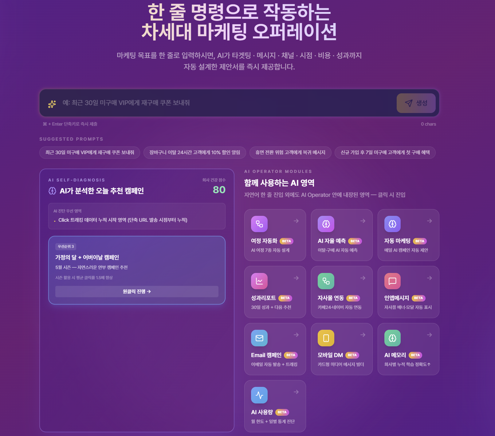
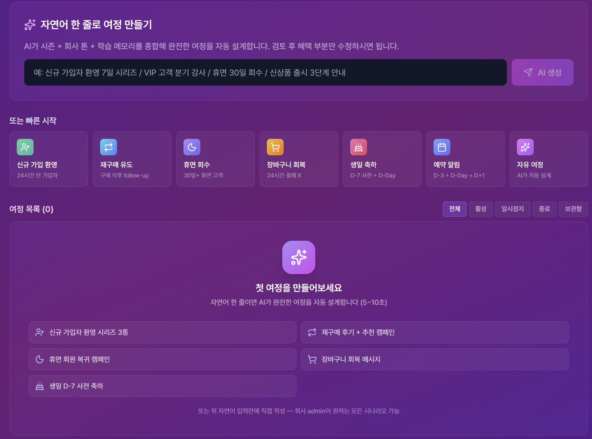
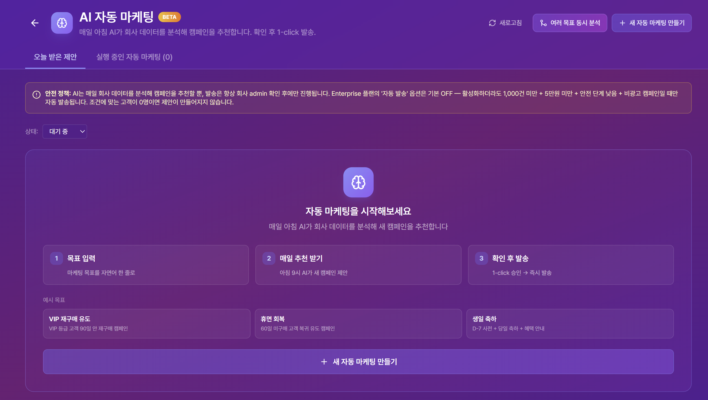

로그인 후 가장 먼저 보이는 화면. 회사의 발송 현황과 고객 DB 통계를 한눈에 확인하고, 자주 쓰는 발송 기능으로 빠르게 진입할 수 있습니다.
FIRST VIEW
로그인 직후 첫 화면 — 한 화면에 모든 핵심 지표
상단 헤더 + 요금제 현황 + 발송 현황 + 6개 캐러셀 카드(DB 현황 분석) + 우측 큰 카드 3개(AI Operator · 직접 타겟 · 고객 DB) 구성. 카드 사이 좌우 화살표 또는 페이지 인디케이터로 6개 분석 카드를 둘러볼 수 있고, 클릭 시 상세 모달이 열립니다.
화면 구성
영역
내용
상단 헤더
회사명, 사용자명, 세션 타이머(30분 무활동 자동 로그아웃), 매뉴얼, 카카오 & RCS, 직접발송, 세그먼트, 발송결과, 수신거부, 설정, 관리, 로그아웃
요금제 현황
현재 요금제 + 고객 DB 사용량 (예: 29,997 / 999,999,999명)
발송 현황
이번 달 성공 건수, 평균 성공률, 총 사용 금액
DB 현황
전체 고객, 수신동의/거부, 이번달 사용금액, 평균객단가·등급·채널·시간대별 분포, AI 인사이트 카드
AI 자동발송 카드
우측 큰 카드 — 자연어 한 줄 입력으로 AI가 타겟·메시지·채널·시점을 자동 설계 (메인 액션)
헤더 매뉴얼 메뉴
상단 헤더 안 매뉴얼 메뉴를 클릭하면 본 가이드 페이지로 진입합니다. 한줄로의 모든 기능을 9 카테고리로 정리한 안내서입니다.
Tip — 가장 빠른 발송 흐름
우측 보라 그라데이션 카드 AI 자동발송이 가장 빠른 발송 경로입니다. "30대 여성 VVIP에게 봄 신상 안내" 같은 자연어 한 줄로 캠페인을 만들 수 있습니다.
CHAPTER 02
고객 데이터 관리
발송의 출발점은 고객 데이터입니다. 엑셀/CSV를 AI가 표준 필드에 자동 매핑하고, 고유 필드는 커스텀 슬롯에 저장해 발송 변수로 활용할 수 있습니다.
1
엑셀 / CSV 업로드
상단 헤더 관리 메뉴 또는 설정 → 고객 DB 업로드에서 엑셀 파일을 드래그&드롭으로 업로드합니다.
· 지원 형식: .xlsx.xls.csv
· 권장 분할: 30,000건 단위 분할 업로드
2
AI 자동 매핑
업로드한 엑셀의 헤더(고객명, 휴대폰번호, 누적구매금액 등)를 AI가 표준 필드에 자동 매핑합니다. 잘못 매핑된 부분은 수동으로 변경할 수 있고, 표준에 없는 컬럼은 커스텀 슬롯에 자동 저장됩니다.
표준 필드 · 21종
이름, 전화번호, 성별, 나이, 생년월일, 이메일, 주소, 지역, 등급, 포인트, 누적구매금액, 구매횟수, 최근구매일, 매장코드, 매장명, 매장전화 등
커스텀 슬롯 · 15개
custom_1 ~ custom_15 — "선호스타일", "방문횟수" 같은 고객사 고유 필드
3
고객 DB 조회
업로드된 고객은 고객 DB 조회 화면에서 검색 · 필터 · 페이지네이션으로 확인할 수 있습니다. 활용 필드만 컬럼으로 표시되며, 우상단 다운로드 버튼으로 엑셀 export가 가능합니다.
4
DB 현황 상세
대시보드의 DB 현황 카드를 클릭하면 6개월 추이 차트, 등급별 분포, 채널별 분포, Top 리스트 등 상세 분석 화면이 열립니다.
Info — 데이터 일관성
고객 DB 조회 / 엑셀 다운로드 / 대시보드 카드의 데이터는 100% 동일합니다. 한쪽에서 보이지 않는 필드는 다른 곳에서도 보이지 않습니다.
CHAPTER 03
AI 자동발송
자연어 한 줄로 캠페인 자동 설계. 한줄로의 핵심 차별점이며, 마케팅 담당자가 가장 빠르게 캠페인을 발송할 수 있는 핵심 기능입니다.
PRIMARY ACTION
대시보드 우측의 큰 카드에서 시작
대시보드 우측 큰 카드 AI 자동발송을 클릭하면 AI Operator 진입 화면이 열립니다. 거기서 자연어 한 줄을 입력하거나 빠른 시작 카드 중 하나를 선택합니다.
"30대 여성 VVIP 회원에게 봄 신상품 안내"
"어제 가입한 신규 고객에게 환영 메시지 보내줘"
"6개월 이상 미구매 휴면 고객 깨우기"
"장바구니 이탈 24시간 고객에게 10% 할인 알림"
빠른 시작 카드 · 7건
자연어 입력 대신 빠른 시작 카드 한 건을 클릭하면 즉시 진입할 수 있습니다.
신규 가입 환영
24시간 안 가입자
재구매 유도
구매 직후 follow-up
휴면 회수
30일+ 휴면 고객
장바구니 회복
24시간 결제 X
생일 축하
D-7 사전 + D-Day
예약 알림
D-3 + D-Day + D+1
자유 여정
AI가 의도를 해석해 흐름을 자동 설계
AI 자동발송 단계
1
AI 자율 진단
AI가 자연어를 해석하여 타겟 필터를 자동 생성하고, 매칭된 인원 + 추천 채널 + topInsight 한 줄을 카드로 표시합니다. (타겟 인원 · 채널 · 광고성 자동 판정)
2
메시지 3안 자동 생성
AI가 문안 3개를 생성합니다. 각 문안에 %이름%, %등급% 같은 개인화 변수가 자동 삽입됩니다. 카드 클릭으로 선택, 수정 버튼으로 인라인 편집.
3
발송 채널 선택
SMS · LMS · MMS 중 채널을 선택합니다. 광고 메시지는 (광고) 표시와 무료 080 수신거부 번호가 자동 부착되어 KISA 정책을 준수합니다.
SMS
90바이트 텍스트
LMS
2,000바이트, 제목 포함
MMS
이미지 최대 3장 · 각 300KB
4
1-click 액션 · 3 카드
검증
스팸필터 테스트 — 금지 단어 + 발신번호 검증
테스트
담당자 휴대전화로 1건 테스트 발송
캠페인 확정
발송 시간 + 회신번호 설정 후 발송
5
캠페인 확정 및 발송
최종 검토 화면에서 타겟 인원, 문안, 채널, 예상 비용을 확인합니다. 즉시 발송 또는 예약 발송을 선택해 캠페인을 시작합니다.
Tip — 정교한 개인화 흐름
기본 자연어 한 줄 흐름 외에 프로모션 브리핑 흐름도 지원합니다. 제목, 설명, 기간, URL, 매장 정보를 단계적으로 입력하면 AI가 더 정교한 개인화 메시지를 생성합니다.
CHAPTER 04
직접발송
수신자와 메시지를 직접 입력해 즉시 발송. 고객 DB 없이 발송이 필요할 때, 또는 엑셀 / 주소록 / 추출 결과를 그대로 가져와 발송할 때 사용합니다.
4·1
기본 직접발송
가장 단순한 발송 방식. 수신자 번호와 메시지를 입력하고 발신번호를 선택하면 끝입니다.
4·2
변수 적용
수신자 입력 시 함께 등록한 컬럼(이름, 회신번호, 기타1~3 등)을 메시지의 %이름% · %기타1% 변수로 치환합니다. 미리보기로 실제 치환 결과를 확인할 수 있습니다.
4·3
파일 등록
엑셀/CSV 파일로 수신자와 변수 데이터를 한 번에 업로드합니다. 컬럼명을 변수에 매핑하면 수신자별 개인화 메시지가 자동 생성됩니다. 중복 제거와 수신거부 자동 제외가 적용됩니다.
4·4
수신자별 회신번호
매장별로 다른 회신번호로 발송하고 싶을 때 사용합니다. 컬럼 매핑에서 회신번호를 지정하면 수신자별 개별 회신번호가 적용됩니다. 회신번호와 매장 전화번호가 모두 비어 있는 고객은 발송에서 자동 제외되며, 제외된 인원과 사유가 발송 전 안내됩니다.
4·5
주소록 활용
자주 보내는 그룹(VIP 100명, 지점 매니저 50명 등)을 주소록으로 저장하면, 다음 발송 시 그룹만 선택해 즉시 보낼 수 있습니다.
· 그룹 다운로드 (xlsx 형식)
· 기존 그룹 안 번호 추가 (중복 phone skip + 무효 번호 skip)
Info — 모든 요금제 활용 가능
직접발송은 한줄로의 기본 기능으로 무료 체험 회원도 사용할 수 있습니다.
CHAPTER 05
직접 타겟 발송
조건 필터로 정밀 타겟팅. 고객 DB에서 조건에 맞는 고객만 정확히 추출해 발송합니다. AI 자동발송보다 더 세밀한 수동 제어가 필요한 캠페인에 적합합니다.
1
타겟 조건 설정
상단 헤더 세그먼트 또는 직접발송 → 직접 타겟 진입 후 필터 조건을 지정합니다. 조건 입력 즉시 매칭 인원이 실시간으로 표시됩니다.
기본 필터
성별, 나이, 등급, 지역, 매장코드, 누적구매금액, 최근구매일
연산자
일치 · 이상/이하 · 사이 · 포함 · 생일월
커스텀 필드
고객사가 등록한 커스텀 컬럼도 동일 필터 가능
2
자연어 모드 (선택)
필터 직접 설정 대신 AI 자연어 모드 토글로 자연어 한 줄 입력도 가능합니다. AI가 자연어를 해석하여 필터 조건을 자동 생성합니다.
3
메시지 작성 및 발송
추출된 고객을 확인하고 메시지를 작성합니다. AI 문구 추천, 스팸필터 사전 검사, 변수 적용, 광고 표시 등 AI 자동발송에서 쓰던 모든 부가 기능을 동일하게 사용할 수 있습니다.
Warn — 0건 매칭 차단
추출된 고객이 0명이면 발송이 차단됩니다. 타겟 조건을 정정하거나 고객 DB에 데이터를 업로드해야 합니다. AI가 자동으로 조건을 완화하지 않으므로 마케팅 의도가 정확히 보장됩니다.
CHAPTER 06
BETA
자동발송
반복 스케줄 캠페인. 한 번 설정해 두면 매월·매주 자동으로 발송되는 반복 캠페인입니다. 생일 축하, VIP 주간 프로모션, 휴면 고객 리마인드 같은 정기 발송을 자동화합니다.
Warn — BETA 안내
현재 베타테스트 진행 중입니다. 안정성 검증을 위해 일부 요금제에 한해 제공되며, 정식 오픈 전까지 한줄로 운영팀의 모니터링 하에 운영됩니다.
5단계 위저드
1
기본 정보
캠페인 이름 + 설명 입력. 운영팀과 다른 담당자가 알아볼 수 있는 이름을 권장합니다.
2
활용 필드 선택
개인화에 사용할 고객 필드를 선택합니다. 매번 발송 시점의 최신 고객 데이터로 치환됩니다.
3
스케줄 설정
매월 N일 또는 매주 N요일 중 반복 주기를 선택. 발송 시각은 한국 시간(KST) 기준입니다.
4
메시지 작성
SMS · LMS · MMS 채널 선택 + 메시지 작성. AI 문안 자동 생성 모드 활용 시 발송 하루 전 AI가 최신 문안을 자동 생성하고, 실패 시 폴백 메시지로 안전하게 발송됩니다.
5
최종 확인
전체 설정을 요약 화면에서 확인하고 첫 회차 미리보기를 검토합니다. 문제 없으면 활성화하여 자동발송 시작.
자동 라이프사이클
한줄로는 발송 전 단계적으로 안전 검사를 수행합니다.
D-1 · 24시간 전
AI 문안 생성 + 사전 알림
자동 스팸테스트 후 담당자에게 알림 전송.
D-DAY · 2시간 전
스팸 재테스트 + 담당자 테스트 발송
LMS 자동 알림으로 담당자에게 1건 테스트 발송.
D-DAY · 발송 시각
실제 발송 + 결과 기록
발송 완료 후 통계가 자동 기록됩니다.
안전 강화 흐름
snapshot 보존
발송 직전 메시지 상태 저장
즉시 정지 단축 URL
담당자 알림에 포함된 1-click 정지 링크
결과 알림 LMS
발송 완료 후 통계 자동 안내
7일 학습 통합
성공/실패 패턴 AI 자동 학습
CHAPTER 07
세그먼트
자연어 세그먼트 생성 + 저장 + 재활용. 자주 사용하는 고객 추출 조건을 자연어로 생성하고 저장하여 모든 발송 흐름에서 재활용합니다.
1
자연어 세그먼트 생성
"VIP 등급 회원 중 최근 30일 미구매" 같은 자연어 한 줄을 입력하면 AI가 필터 조건을 자동 생성합니다.
2
미리보기
자동 생성된 필터 조건과 매칭 인원, 샘플 고객 5건이 표시됩니다. 조건이 정확하면 저장, 정정 필요하면 자연어를 다시 입력합니다.
3
저장
세그먼트 이름 + 이모지 아이콘 + 설명을 입력하여 저장합니다. 저장된 세그먼트는 모든 발송 흐름(AI 자동발송 / 직접 타겟 발송 / 자동발송)에서 재활용 가능합니다.
4
재활용
다음 발송 시 저장된 세그먼트 카드를 클릭하면 즉시 해당 고객 매트릭스로 발송 흐름에 진입합니다.
Warn — 0건 매칭 차단
세그먼트 생성 시점에 0건이거나 발송 시점 매칭 0건이면 발송이 차단됩니다. AI가 자동으로 조건을 완화하지 않으므로 마케팅 의도가 정확히 보장됩니다.
CHAPTER 08
발송 결과 & 분석
캠페인 성과 추적 + AI 인사이트. 발송한 모든 캠페인의 결과를 한 곳에서 추적합니다. 캠페인별 통계, 수신자별 상세 결과, 캘린더 일정 보기, AI 성과 분석까지 제공합니다.
8·1
발송 결과 목록
모든 캠페인을 카드 형태로 정렬해 보여줍니다. 일별/월별 토글, 상태별 필터(발송중·완료·예약·취소·실패), 광고 여부 표시.
8·2
캠페인 상세
특정 캠페인을 클릭하면 발송 통계, 통신사별 분포, 사용된 메시지, 비용 정산 내역을 확인할 수 있습니다.
카운트
성공 · 대기 · 실패
통신사
SKT / KT / LGU+
채널
SMS / LMS / MMS
시간대
시간대별 발송 흐름
8·3
발송 상세 내역
수신자 한 명 한 명의 발송 결과를 확인합니다. 휴대폰번호 · 통신사 · 상태 · 발송시각 · 결과코드. 엑셀 다운로드(한글 헤더 + KST 시간), 실패 사유 분석.
대시보드의 최근 캠페인 카드를 클릭하면 가장 최근에 보낸 5건을 빠르게 다시 볼 수 있습니다.
8·6
AI 분석
발송 데이터를 AI가 분석하여 마케팅 인사이트를 제공합니다.
· 가장 효과적인 발송 시간대 (예: "화요일 오전 10시 발송이 가장 효과적")
· 가장 반응이 좋은 메시지 패턴
· 다음 캠페인 추천 (요금제별 제공)
· 1-click 액션 (추천 → AI 자동발송 진입)
8·7
일일 인사이트 메일
매일 9시 정각 자동 발송되는 AI 인사이트 메일. 어제 발송 통계 요약, 등급별/채널별 분포 변화, 오늘 추천 캠페인 한 줄, 1-click 진입 링크.
CHAPTER 09
부가 기능
템플릿 · 수신거부 · 예약. 일상적으로 자주 쓰는 보조 기능들입니다.
9·1
AI 발송 템플릿
한 번 만든 캠페인을 템플릿으로 저장해 두면 다음에 한 번의 클릭으로 같은 캠페인을 다시 보낼 수 있습니다.
· AI 한줄로 / 맞춤한줄 모두 템플릿 저장 가능
· 템플릿별 이모지 아이콘 + 이름 + 설명
· 검색 + 페이지네이션 (8건 / 페이지)
· 클릭 한 번으로 AI 자동발송 흐름 즉시 실행
9·2
수신거부 관리
수신거부 고객을 관리합니다.
· 080 자동 연동 (수신거부 자동 등록)
· 수동 등록 + 엑셀 업로드 / 다운로드
· 사용자(브랜드 담당자)별 격리 관리
· 발송 시점 = 수신거부 고객 자동 제외
9·3
예약 대기
예약된 모든 캠페인과 자동발송의 다음 회차를 한 곳에서 봅니다.
· 발송 시각 임박 순 정렬
· 즉시 취소 · 시간 변경 · 미리보기
Tip — 자동발송 회차 건너뛰기
자동발송으로 등록된 캠페인은 "예약 대기"에 다음 회차가 자동으로 노출됩니다. 임시로 한 회차만 건너뛰고 싶을 때 예약 대기에서 취소하면 됩니다.
END OF MANUAL
매뉴얼 종결 안내
본 가이드는 한줄로의 9 핵심 기능 + AI Operator 베타 영역(Chapter 10)을 정리한 매뉴얼입니다. 각 카테고리는 좌측 사이드바에서 진입하거나, 키보드 좌우 화살표로 이동할 수 있습니다. 추가 질의가 있으시면 1:1 고객 지원 영역으로 진입해 주세요.
CHAPTER 10
BETA
AI Operator — 10 sub-메뉴
한줄로 차별점의 핵심 영역. 자연어 한 줄로 AI가 마케팅 캠페인 전 흐름을 자동 설계하는 통합 운영 체계입니다. 일반 발송 흐름(Chapter 03~09)을 뛰어넘는 AI 자동화 영역이며, 현재 베타로 일부 회사에 한해 활성화됩니다.

대시보드 우측 보라 그라데이션 카드 AI Operator를 클릭해 진입합니다. 자연어 한 줄을 입력하면 6 AI 서브에이전트(Target / Message / Compliance / Channel / Schedule / Cost-ROI)가 자동 협업하여 캠페인 제안서를 5~10초 안에 생성합니다.
Info — 진입 자격
현재 베타 영역으로 Enterprise / Business 요금제 + 한줄로 운영팀 승인 회사에 한해 활성화됩니다. 일반 발송 흐름은 Chapter 03~09를 활용해 주세요.
10 · 1
여정 자동화
/ai-journeys
자연어 한 줄로 6 표준 여정 + 자유 여정을 자동 설계합니다(5~10초). 트리거 감지 → 시즌 컨텍스트 → 메모리 학습 → 스텝 설계 → 메시지 작성 → 검토 준비까지 6 서브에이전트가 700ms 간격으로 순차 진행됩니다.
표준 여정 6 + 자유 여정 1
신규 가입 환영 · 재구매 유도 · 휴면 회수 · 장바구니 회복 · 생일 축하 · 예약 알림 · 자유 여정(AI 자율 설계)
3 스텝 타입
wait · condition · message + SMS / LMS / MMS / 카카오 채널 + 광고 합성 미리보기
활성화 안전망
자동 검증(스팸·비용·잔액) · 발송 2시간 전 담당자 LMS 알림 · 1-click 즉시 정지 단축 URL · 결과 알림 LMS · 7일 학습 통합
A/B 자동 최적화
Variant A/B/C 자동 발송 + Thompson Sampling Bandit Optimizer가 누적 데이터로 winner를 자동 선정

10 · 2
AI 자율 마케팅
/continuous-operator
매일 09:00 KST AI가 회사 데이터를 분석하여 오늘 추천 캠페인 1~3건을 제안서로 자동 작성합니다. 회사 관리자가 캠페인 목표를 한 번 설정해 두면, 이후 AI가 영구적으로 운영 제안을 이어갑니다.
1
캠페인 목표 등록
예: "VIP 유지 + 신규 가입 환영" 같은 영구 목표를 등록합니다. AI는 이 목표를 기준으로 매일 제안을 만듭니다.
2
매일 09:00 제안서 자동 생성
AI가 어제까지의 발송 결과 · 고객 변화 · 시즌 컨텍스트를 종합하여 오늘 캠페인 1~3건을 제안합니다. 7일이 지나면 미처리 제안서는 자동 만료됩니다.
3
자동 실행(Enterprise 한정)
아래 조건이 모두 충족된 제안서는 회사 관리자 승인 없이 자동 발송됩니다.
· 발송 인원 1,000건 이하
· 예상 비용 50,000원 이하
· Low risk 판정 + 비광고 메시지
Warn — 5단 안전망
비용 한도 · 시간대 옵트아웃(매일/매주/매달) · 발송 정책 매트릭스 · 7일 학습 검증 · 담당자 정지 사유 AI 학습. 한 단이라도 차단되면 자동 발송은 멈추고 관리자 승인 대기로 전환됩니다.

10 · 3
Predictive · 예측 분석
/predictive
고객 데이터 전체에 대해 LTV · 이탈 위험 · 구매 가능성 · 클릭 점수 등 7+ 지표를 자동 예측합니다(1시간 cron). 누적 데이터 7일 이상이면 학습 모델, 그 미만은 등급/활동 기반 cold-start 추정치가 사용됩니다.
예측 지표
설명
LTV
향후 90일 예상 매출
이탈 위험
90일 안 미접속 확률
구매 가능성
단기 재구매 확률
클릭 점수
메시지 클릭 응답 점수
휴면 전환
활성 → 휴면 전환 확률
VIP 유지
VIP 등급 지속 가능성
가격 민감도
할인 쿠폰 반응성
1-click 액션 3 카드
이탈 위험 고객
위험 점수 상위 고객 추출 → AI Operator 진입
휴면 회수
휴면 전환 확률 임계점 초과 고객 추출 → AI Operator 진입
VIP 회복
VIP 이탈 위험 추출 → AI Operator 진입
각 카드 클릭 시 AI Operator에 사전 객체(prefill objective)가 자동 적용됩니다. 예측 근거는 등급 · 최근 활동 · 누적 구매 · 채널 응답 · 시즌 5 영역으로 카드에 표시됩니다(Explainability). 화면 상단에는 cold-start 안내 영역 + 학습 모델 영역이 분리 노출되며, 8 카드 요약(평균 LTV · 이탈 위험 분포 · 구매 가능성 등급별 · 채널 Top · 최근 활동 시간대 · 이탈 위험 70%+ 인원 · 구매 가능성 60%+ 인원 · 평균 클릭 점수)으로 회사 전체 예측 풍경을 한눈에 보여줍니다.
10 · 4
AI 자율 진단
/ai-operator좌측 영역 카드
AI Operator 진입 첫 화면 좌측에 자동 노출되는 추천 카드입니다. 회사 건강 점수(0~100) + 우선 처리 영역 3건 + 우선순위별 추천 캠페인 3 카드를 즉시 보여줍니다.
PRIORITY 1 · CRITICAL
즉시 대응 필요
이탈 위험 급증, 결제 실패율 급증 등 critical 신호
PRIORITY 2 · WARNING
주의 영역
최근 발송 응답률 하락, 휴면 비중 증가 등
PRIORITY 3 · OPPORTUNITY
기회 영역
시즌·신상품 활용 기회, 신규 가입자 유입 등
각 카드는 title · reason · targetCount · expectedImpact · oneClickObjective 5 영역을 포함합니다. 1-click 클릭 시 AI Operator에 사전 객체가 자동 적용되어 즉시 캠페인 흐름으로 진입합니다. 운영 데이터 누적 직전에는 우선순위 카드 1~2건만 표시될 수 있으며, 운영 시간이 흐를수록 3 카드 매트릭스가 자동 확장됩니다.
10 · 5
성과리포트
/performance
매주 AI 인사이트 + 채널·시간대·요일별 분포 + 매출/ROI 추정을 한 화면에서 제공합니다. 30일 · 7일 · 24시간 기간 토글로 직전 기간 대비 ± 델타가 표시됩니다.
5 요약 metric
매출 · ROI · 전환율 · 클릭율 · 발송수 (직전 기간 대비 +/-%)
AI 자율 진단
topInsight 한 줄 + recommendation 추천 캠페인
1-click 액션 3
강화 · 정정 · 신규 캠페인 → AI Operator 사전 객체 적용
6 차트
시간대 · 요일 · 채널 · 세그먼트 · 시즌 · funnel
일일 인사이트 카드는 매일 9시 자동 메일과 동일한 데이터를 그대로 보여줍니다. 매장 코드별 분포(region 강화)도 함께 표시됩니다. 화면 상단에는 일일 인사이트 4 metric(어제 발송 / 어제 성공 / 어제 매출 / 어제 캠페인 수) + 자사몰 미연동 안내 영역 + AI 자율 진단 카드 + 1-click 액션 3 카드 + 통계 5 metric 영역이 순차 노출됩니다. 모든 metric은 직전 기간 대비 ± 델타 + TrendingUp/Down 아이콘이 함께 표기됩니다.
10 · 6
자사몰 + 데이터 융합
/cdp-settings
자사몰을 한줄로 Customer Data Platform에 연동합니다. 주문 · 취소 · 회원 이벤트가 실시간으로 한줄로 안 고객 데이터와 융합되어 캠페인 타겟팅과 예측 모델에 즉시 반영됩니다.
지원 자사몰
카페24
네이버 스마트스토어
Shopify
메이크샵
imweb
식스샵
WooCommerce
자체 호스팅
카페24 OAuth + Webhook
HMAC-SHA256 서명 검증 + customer · order · cancel 이벤트 실시간 동기화
한줄로 CDP API
4 외부 endpoint(identify · event · order · bulk-import) + bcrypt 인증 + 월 한도 + idempotency_key 중복 차단
화면 상단에는 자사몰 미연동 안내 영역 + AI 자율 진단 카드 + 자사몰별 연동 카드(카페24 / 네이버 스마트스토어 / 자체 호스팅 등) 영역이 순차 표시됩니다. 각 자사몰 카드 안에는 활성 고객 수 + 24시간 안 이벤트 수 + 지난 동기화 시각 + 연동 영역 진입 버튼이 표시됩니다. 자체 호스팅 자사몰 영역에는 별도 Webhook + SDK 활용 매트릭스 + 카페24 OAuth 발급 안내 영역이 단계별로 노출됩니다.
10 · 7
인앱메시지
/inapp-messages
자사몰 안에 노출되는 In-App 메시지를 만들고 운영합니다. 상단 배너 · 하단 배너 · 센터 모달 3 타입을 지원하며, 자사몰 SDK가 자동으로 매칭 메시지를 fetch · render · 빈도 제어합니다.
자연어 입력 · 빠른 시작 7 · 6 서브에이전트 진행 · 5 metric · 6 차트 · Explainability
화면 상단에는 AI 자율 진단 카드(AI 문안 다듬기 · 시간대 최적화 · 세그먼트 정밀화 3 영역) + 자연어 한 줄 입력 영역 + 빠른 시작 7 카드(첫구매 회유 · 신규 가입 환영 · 휴면 회수 · 신상품 출시 · VIP 감사 · 활동 재활성 알림 · 자유 모드) + 5 metric(총 메시지 · 활성 · 평균 CTR · 30일 impression · 24시간 평균 클릭) 영역이 순차 표시됩니다.
10 · 8
Email 캠페인
/email-campaigns
회사 SMTP 자격증명을 등록하여 이메일 캠페인을 발송합니다. 비밀번호는 AES-256-GCM으로 암호화 저장되며, 4 preset(Gmail · Outlook · Naver · 자체)으로 빠르게 설정할 수 있습니다.
캠페인 진입 흐름은 (1) SMTP 등록 → (2) preset 선택 또는 자체 입력 → (3) 메일 디자인 + 제목 + 본문 작성 → (4) 수신자 매트릭스 선택 → (5) 발송 또는 예약 순서입니다. 6 metric은 발송 직후 자동 수집되어 회사 admin 화면 + 일일 인사이트 메일에 통합됩니다.
10 · 9
AI 메모리
/ai-memory
회사별 학습 메모리를 누적하여 다음 AI 호출 시 시스템 프롬프트에 자동 주입합니다. 시간이 지날수록 캠페인 정확도가 향상되는 한줄로의 핵심 학습 영역입니다.
5 메모리 타입
타입
설명
success_pattern
성공 캠페인 패턴 (응답률 상위)
customer_insight
고객 행동 인사이트
brand_tone_evolution
브랜드 톤 진화 기록
channel_performance
채널별 성과 학습
compliance_learning
검수팀 반려 사유 학습
자동 학습
30초 cron이 발송 10건 이상 캠페인에서 idempotent 패턴을 추출해 자동 누적
자연어 검색
5 타입 필터 + 인용 기반 자연어 검색으로 메모리 직접 탐색
Top Impact 카드
가장 영향이 큰 메모리 5건(수치 영향 + 최근 활용 빈도)
수동 추가
관리자가 직접 입력 + 5 타입 분류 + 가이드 모달
Tip — 시간이 지날수록 정확도↑
한 회사가 캠페인을 누적할수록 AI 메모리가 풍부해져 다음 캠페인의 타겟·문안·시점 정확도가 향상됩니다. 회사별로 메모리가 격리되어 다른 회사의 학습이 섞이지 않습니다.
10 · 10
AI 사용량
/ai-usage
AI 호출 횟수 · 비용 · 한도 사용률을 추적하고, 향후 30일 예측까지 보여줍니다. 일별 비용 추이에 선형 회귀(y = ax + b)를 적용해 다음 달 예상 비용을 일평균 한도와 비교합니다.
6 요약 metric
호출 수
직전 30일 누적
비용
직전 30일 누적
토큰
input + output
캐시 hit율
프롬프트 캐시 활용도
일평균
하루 평균 호출 + 비용
한도 사용률
월 한도 대비 % 진행률
6 차트
호출 추이
AI 모델별 분포
토큰 분포
비용 추이
한도 사용률
실패 분포
Info — Batch 영역
24시간 SLA 일괄 처리를 사용하면 동일 호출 대비 약 50% 비용이 절감됩니다. AI 메모리 학습, 야간 자동 분석 등 즉시성이 낮은 작업에 자동 적용됩니다.
AI OPERATOR 진입 자격
베타 진입 가능 회사
AI Operator는 현재 베타 영역으로 일부 회사만 진입 가능합니다(Enterprise / Business 요금제 + 한줄로 운영팀 승인). 진입 자격 확인 + 활성화 신청은 1:1 고객 지원 영역으로 진입해 주세요.